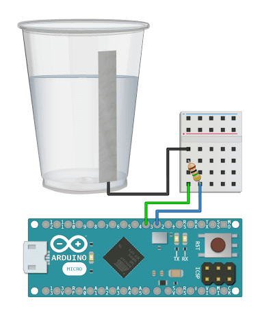

Measure and calibrate water level sensors.v2.0.0
See Example Public Methods Release NotesMeasure and calibrate capacitance sensors to detect change in water levels from the outside of a plastic container. The example below uses a piece of aluminum foil, but you can attach the wire to anything conductive and calibrate the sensor accordingly.
This library measures relative capacitance so it is prone to interference. You can temporarily adjust the entire scale and then reset it when the capacitance disruption has stopped by using setModifier() and resetModifier(). Look at the Capacitance Library if you would like to know more about how capacitance is calculated.

Follow these steps to calibrate each water level sensor before use:
You must continuously call update() inside of loop() in order to use theReal-Time methods tagged below.

Pass in integers for the send and receive pins to create a new instance of this class, along with an integer for the total number of levels the water sensor will detect. Example: if you want to detect low, medium, and high levels then level_count should equal 3.
Pass in an integer to change the number of readings taken to calculate the moving average getRawValue(). This can be called inside of setup() or also safely at runtime inside of loop().
Provide an integer for the level index and a raw value from getRawValue(). The level index starts at one (it is not zero-based). You must also call setMaxLevel() at the end to set an upper bounds of the last level.
Provide an integer from getRawValue() to set the upper-bounds threshold of the last level.
Keep processing the readings and move this library along in real-time.
Returns the capacitance sensor reading after being adjusted with the value given to setModifier().
This will return getRawValue() if you have not used setModifier() yet, or if you have called resetModifier().
Returns the raw capacitance sensor reading and ignores any value that has been passed to setModifier().
Returns the current water level.
This method will return true once the sensor getValue() changes. It will then return false until the reading changes to a different value again.
This method will return true once the sensor getRawValue() changes. It will then return false until the reading changes to a different value again.
This method will return true once the sensor getActiveLevel() changes. It will then return false until the level changes to a different value again.
Provide a positive or negative integer to temporarily adjust the water sensor threshold scale. The default value is 0.
For example; if you have calibrated the scale and turn on a motor near the sensor: all readings will need to be adjusted for the increased capacitance from the motor.
Changes the setModifier() back to 0 and resets calibration of the water sensor threshold scale.
For example; if you have calibrated the scale and turn on a motor near the sensor: all readings will need to be adjusted for the increased capacitance from the motor.
Check your downloads folder and double-click the  WaterSensor.zip file.
WaterSensor.zip file.
Move the un-zipped contents of the  WaterSensor folder to the Arduino
WaterSensor folder to the Arduino  libraries folder:
libraries folder:


Upgrade to Arduino IDE v1.5 or greater and load the Example Sketch to get started.